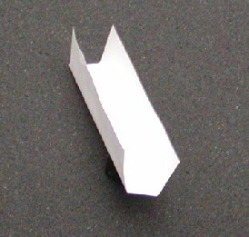

Illustration 3: Detector Collimator Plates

Illustration 3: Detector Collimator Plates
Illustration 4: Paper Tray

| NOTE: | The paper tray should be cut and folded to have a 13mm (9/16 in.) wide base with approximately 20mm (7/8 in.) sides, and approximately 105mm (4 1/4 in.) long. Use the diode end of the removed digital module to help create the right size tray. Folding the tray about 1mm smaller than the diode width works well. |